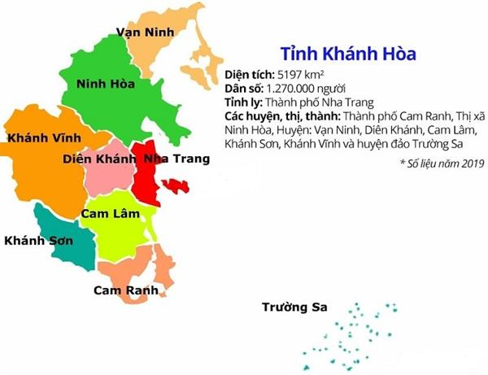
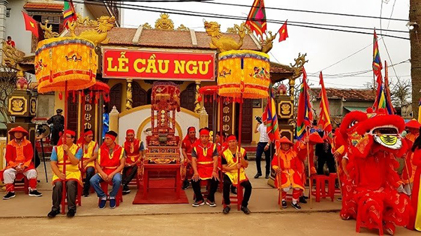
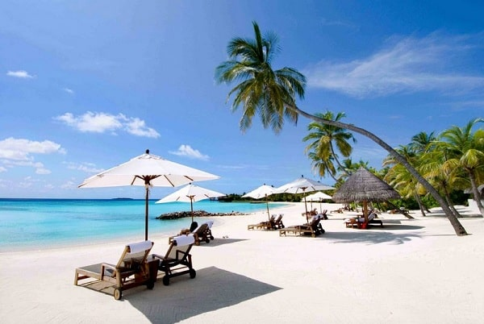

Tỉnh Khánh Hòa
- Vị trí địa lí
- Lễ hội
- Lễ hội Tháp Bà
- Lễ hội Am Chúa
- Lễ hội đình làng nông nghiệp
- Lễ hội Ăn mừng lúa mới của người Raglai ở Khánh Hòa
- Lễ hội Cầu ngư
- Ẩm thực
- Du lịch
Khánh Hòa nằm ở khu vực duyên hải Nam Trung Bộ của Việt Nam.
Tỉnh lỵ của Khánh Hòa là thành phố Nha Trang, cách Thành phố Hồ Chí Minh 443 km về phía Nam,
cách Đà Nẵng 531 km về phía Bắc và cách thủ đô Hà Nội 1.280 km về phía Bắc theo đường Quốc lộ 1A.
Khánh Hòa có diện tích tự nhiên là 5.197 km². Phần đất liền của tỉnh nằm kéo dài từ tọa độ địa lý 12°52’15" đến 11°42’50" vĩ độ Bắc và từ 108°40’33" đến 109°29’55" kinh độ Đông.[6] Điểm cực Đông trên đất liền của Khánh Hòa nằm tại Mũi Đôi trên bán đảo Hòn Gốm,
huyện Vạn Ninh và cũng là điểm cực đông trên đất liền của Việt Nam. Chiều dài vào khoảng 150 km, chiều ngang chỗ rộng nhất vào khoảng 90 km.

Tuy nhiên, do điều kiện lịch sử chia cắt và sáp nhập nên 9.300 ha nằm giữa xã Ea Trang (huyện M'Drắk, tỉnh Đắk Lắk)
và xã Ninh Tây (thị xã Ninh Hòa, tỉnh Khánh Hòa) nên cả hai tỉnh Đắk Lắk và Khánh Hòa đều tranh chấp để phân định địa giới hành chính.
Hiện nay, tỉnh Khánh Hòa còn lưu giữ được khá nhiều lễ hội mang đậm nét văn hóa bản địa, tục thờ cúng trong tín ngưỡng dân gian.
Các lễ hội đều xuất phát từ lao động, từ phong tục tập quán, là nếp sinh hoạt văn hóa tinh thần của người dân.
Theo thống kê của chính quyền địa phương, tính đến năm 2010, Khánh Hòa có 494 di sản lễ hội lớn, nhỏ của người Kinh, bao gồm 237 lễ hội đình làng,
121 lễ hội miếu, lăng và 136 lễ hội chùa. Ngoài ra còn các lễ hội truyền thống của người dân tộc.

Các lễ hội tiêu biểu:
Là một tỉnh ven biển có nhiều làng chài nên phong cách ẩm thực ở Khánh Hòa chịu ảnh hưởng sâu sắc từ biển, với nguyên liệu chủ yếu được chế biến từ hải sản.
Đồng thời cư dân Khánh Hòa xưa chủ yếu di cư vào từ các tỉnh Bình Định, Phú Yên, Quảng Nam và Quảng Ngãi nên phong cách ẩm thực cũng chịu ảnh hưởng sâu sắc từ các tỉnh trên.

Các món đặc sản của Khánh hòa được nhiều người biết đến như nem Ninh Hòa, bún cá Nha Trang, bún sứa, bánh ướt Diên Khánh...
Ngoài ra dưới sự ảnh hưởng của người Hoa (sinh sống đông đúc gần khu vực chợ Đầm phường Xương Huân), người Pháp (từng đến Nha Trang nghỉ dưỡng rất đông thời Pháp thuộc)
và những người miền Bắc di cư vào Nam sau năm 1954 tạo cho Nha Trang phong cách ẩm thực đặc biệt khác hẳn với các địa phương khác trong tỉnh và
khu vực Nam Trung Bộ tiêu biểu là những món ăn như phở Nha Trang, bánh mì Nha Trang, bò nướng Lạc Cảnh...
Khánh Hòa là một trong những trung tâm du lịch lớn của Việt Nam. Nhờ có bờ biển dài hơn 200 km và gần 200 hòn đảo lớn nhỏ cùng nhiều vịnh biển đẹp như
Vân Phong, Nha Trang (một trong 12 vịnh đẹp nhất thế giới), Cam Ranh... với khí hậu ôn hòa, nhiệt độ trung bình 26 °C, có hơn 300 ngày nắng trong năm,
và nhiều di tích lịch sử văn hóa và danh lam thắng cảnh, nên dịch vụ - du lịch là ngành phát triển nhất ở Khánh Hòa với số du khách hơn 1,6 triệu lượt
vào năm 2009. Các hình thức du lịch ở Khánh Hòa rất phong phú với các hình thức như du lịch sinh thái biển đảo, du lịch tham quan - vãn cảnh, du lịch văn
hóa... Trong các khách sạn và khu nghỉ mát lớn ở Khánh Hòa, có những khu du lịch và khách sạn tầm cỡ thế giới như khu nghỉ mát Ana Mandara, Vinpearl Land,
Sheraton Nha Trang hotel & spa, Novotel, hay khu nghỉ dưỡng cao cấp Evason Hideaway (huyện Ninh Hòa) của tập đoàn Ana Mandara, được tờ Sunday Times bầu là một
trong 20 resort tốt nhất thế giới vào năm 2005. Những di tích lịch sử văn hóa có Tháp Po Nagar, thành cổ Diên Khánh, các di tích của nhà bác học
Alexandre Yersin...

Ngoài vị thế là một trung tâm du lịch lớn Nha Trang đã trở thành điểm đến của nhiều sư kiện lớn của Việt Nam và Thế giới như: Hoa hậu Việt Nam, Hoa hậu Thế giới người Việt 2007 và 2009,
Hoa hậu Hoàn vũ 2008, Hoa hậu Trái Đất 2010... cùng với Festival Biển (Nha Trang) được tổ chức 2 năm một lần đã góp phần quảng bá du lịch Khánh Hòa với thế giới.